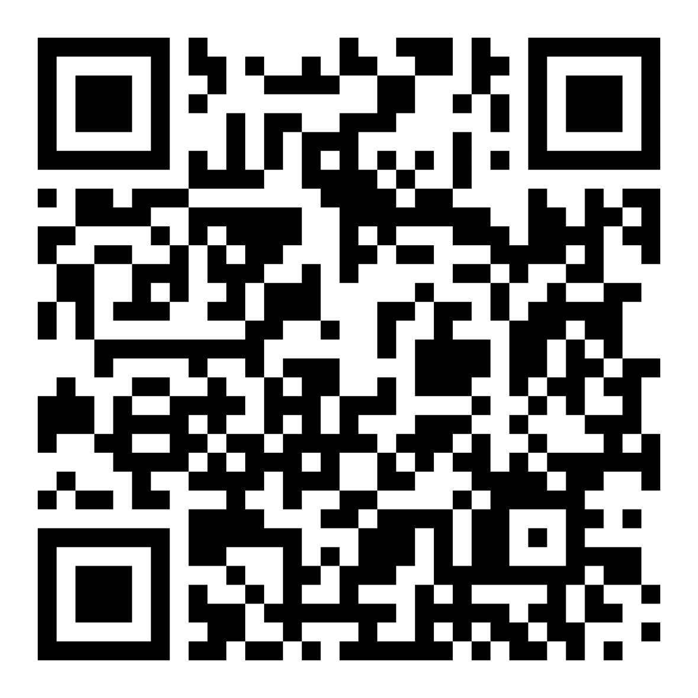

<!DOCTYPE html>
<html>
  <head>
    <meta charset="UTF-8" />
    <meta name="viewport" content="width=device-width, initial-scale=1.0" />
    <title>Career Scorecard</title>
    <script src="https://cdn.tailwindcss.com"></script>
    <script src="https://unpkg.com/@babel/standalone/babel.min.js"></script>
    <script type="text/babel" data-type="module">
     import React, { useMemo, useState } from "https://esm.sh/react";
      import { createRoot } from "https://esm.sh/react-dom/client";

      // 👇 PASTE YOUR ENTIRE CANVAS CODE BELOW THIS LINE

const quizQuestions = [
  {
    question: "When something interests you, what do you do first?",
    answers: [
      { text: "Make a quick plan", style: "Planner" },
      { text: "Look it up first", style: "Researcher" },
      { text: "Ask someone about it", style: "Connector" },
      { text: "Try it fast", style: "Experimenter" },
      { text: "Make something related", style: "Creator" },
    ],
  },
  {
    question: "You have one free afternoon to explore a career idea. You:",
    answers: [
      { text: "Compare 3 options side-by-side", style: "Planner" },
      { text: "Watch & read 'day in the life' content", style: "Researcher" },
      { text: "Message someone & ask 3 questions", style: "Connector" },
      { text: "Apply for an internship", style: "Experimenter" },
      { text: "Start a mini project or vision board", style: "Creator" },
    ],
  },
  {
    question: "What kind of school project fits you best?",
    answers: [
      { text: "Checklist + clear instructions", style: "Planner" },
      { text: "Research-heavy with sources", style: "Researcher" },
      { text: "Group project with lots of discussion", style: "Connector" },
      { text: "Hands-on & interactive", style: "Experimenter" },
      { text: "Creative build (design/write/make)", style: "Creator" },
    ],
  },
  {
    question: "When you don’t know what you want, what helps most?",
    answers: [
      { text: "A step-by-step path", style: "Planner" },
      { text: "More info & details", style: "Researcher" },
      { text: "Talking it out with someone", style: "Connector" },
      { text: "Trying a few things", style: "Experimenter" },
      { text: "Making something to explore it", style: "Creator" },
    ],
  },
  {
    question: "Pick the line that sounds most like you:",
    answers: [
      { text: "If I see the steps, I’m good", style: "Planner" },
      { text: "Let me understand it first", style: "Researcher" },
      { text: "Let me talk to someone doing it", style: "Connector" },
      { text: "Let me try it once & I’ll know", style: "Experimenter" },
      { text: "Let me make something & share it", style: "Creator" },
    ],
  },
  {
    question: "If you could test-drive a job for one day, you’d want:",
    answers: [
      { text: "A clear schedule and expectations", style: "Planner" },
      { text: "Time to ask lots of questions", style: "Researcher" },
      { text: "To meet people & see teamwork", style: "Connector" },
      { text: "Real tasks, not just watching", style: "Experimenter" },
      { text: "To create something by the end", style: "Creator" },
    ],
  },
  {
    question: "What makes you lose interest fastest?",
    answers: [
      { text: "It's messy or unclear", style: "Planner" },
      { text: "It's vague & hard to research", style: "Researcher" },
      { text: "It feels isolating", style: "Connector" },
      { text: "It's slow & I can't try it", style: "Experimenter" },
      { text: "I can't make it my own", style: "Creator" },
    ],
  },
  {
    question: "When you’re stuck between two options, you choose the one with:",
    answers: [
      { text: "The clearest next steps", style: "Planner" },
      { text: "The strongest info behind it", style: "Researcher" },
      { text: "The best people/opportunities", style: "Connector" },
      { text: "The easiest low-risk test", style: "Experimenter" },
      { text: "The most room to build/create", style: "Creator" },
    ],
  },
  {
    question: "Which mini career exploration mission would you actually do this month?",
    answers: [
      { text: "Model out 2-3 career paths in a 2 week sprint", style: "Planner" },
      { text: "Research 3 careers & note surprises", style: "Researcher" },
      { text: "Talk to 2 people about how they started", style: "Connector" },
      { text: "Try 3 activities and rate them", style: "Experimenter" },
      { text: "Make 1 small project for a mini-portfolio", style: "Creator" },
    ],
  },
  {
    question: "What sounds most exciting about a non-traditional path?",
    answers: [
      { text: "Designing my own plan", style: "Planner" },
      { text: "Finding a niche by learning what’s out there", style: "Researcher" },
      { text: "Meeting interesting people", style: "Connector" },
      { text: "Trying things and learning fast", style: "Experimenter" },
      { text: "Building something original", style: "Creator" },
    ],
  },
];

const styleProfiles = {
  Experimenter: {
    icon: "⚡",
    color: "bg-orange-50 border-orange-200 text-orange-950",
    short: "You learn best by trying things out.",
    description:
      "You love to jump in, test, and see what fits. You are curious, flexible, and willing to learn by doing instead of waiting until everything is perfectly clear. This is a powerful strength because many career paths are discovered through real experiences, small experiments, and unexpected opportunities. You may not always know exactly where something is leading, but you are good at gathering clues by taking action.",
    watchOut:
      "Be mindful of starting lots of things but not finishing, or judging yourself if something does not click right away.",
    steps: [
      "Pick 2 mini-experiments this week, like visiting a club, joining a challenge, or trying a new hobby.",
      "Rate each experience: what you liked, what you did not like, and what surprised you.",
      "Share your thoughts with someone who supports your growth.",
    ],
  },
  Planner: {
    icon: "🗺️",
    color: "bg-blue-50 border-blue-200 text-blue-950",
    short: "You like to map things out before jumping in.",
    description:
      "You feel most confident when you have a plan and know what is coming next. You are organized, reliable, and great at turning big ideas into clear steps. This is a powerful strength because non-traditional paths still need structure, follow-through, and decision-making. You may be the kind of person who can make an unfamiliar path feel less overwhelming by breaking it into smaller moves.",
    watchOut:
      "Be mindful of overthinking or waiting until everything feels perfect. Sometimes it is okay to start before you see the whole path.",
    steps: [
      "Make a 2-week plan with 3 tiny actions, like researching a club, attending an event, or talking to someone in a field you like.",
      "Set a clear deadline for each action.",
      "Share your plan with a friend, teacher, or mentor for encouragement.",
    ],
  },
  Researcher: {
    icon: "🔎",
    color: "bg-purple-50 border-purple-200 text-purple-950",
    short: "You love gathering information before making a move.",
    description:
      "You are thoughtful, thorough, and great at spotting important details others might miss. You like understanding the facts before deciding what to try, which can help you make confident and informed choices. This is a powerful strength because the world is full of careers most students have never heard of yet. Your curiosity can help you uncover hidden options, ask better questions, and make sense of what is possible.",
    watchOut:
      "Be mindful of analysis paralysis. Sometimes you need to act to know what to do next. Experience can be a fantastic teacher too.",
    steps: [
      "Watch or read 3 credible day-in-the-life stories about careers that interest you.",
      "Write down 5 things that surprised you.",
      "Share one cool thing you learned with a friend or teacher.",
    ],
  },
  Connector: {
    icon: "🤝",
    color: "bg-green-50 border-green-200 text-green-950",
    short: "You learn through people and conversations.",
    description:
      "You get energy from talking things out and hearing real stories. You are a natural relationship-builder, great at asking questions, and quick to make new friends. This is a powerful strength because many career opportunities start with conversations, mentors, introductions, and shared ideas. You may learn best when you can hear how real people found their way, then use those stories to imagine what might be possible for you.",
    watchOut:
      "Be mindful of letting other people’s opinions shape your path too much. Your interests matter too.",
    steps: [
      "Reach out to 2 people in careers or activities you are curious about.",
      "Ask them the same 3 questions: what they enjoy most, what surprised them, and what they wish they knew in high school.",
      "Compare the answers and notice what stands out for you.",
    ],
  },
  Creator: {
    icon: "🎨",
    color: "bg-pink-50 border-pink-200 text-pink-950",
    short: "You love to make things and express ideas.",
    description:
      "Whether it is writing, art, videos, projects, designs, or new ideas, you learn by building and sharing. You are imaginative, expressive, and able to turn inspiration into something real. This is a powerful strength because non-traditional paths often reward people who can create, communicate, and bring fresh ideas into the world. You may discover your direction by making things that show what you care about and what you are capable of.",
    watchOut:
      "Be mindful of getting stuck in your own head or being too critical of your work.",
    steps: [
      "Start a tiny project this week: a poster, short video, mini portfolio piece, or anything about something you care about.",
      "Share your creation with someone you trust.",
      "Ask for one piece of feedback and one thing they liked most.",
    ],
  },
};

const styleOrder = ["Planner", "Researcher", "Connector", "Experimenter", "Creator"];

function Confetti() {
  const pieces = Array.from({ length: 42 }, (_, i) => i);
  return (
    <div className="pointer-events-none fixed inset-0 overflow-hidden">
      {pieces.map((piece) => (
        <div
          key={piece}
          className="absolute top-[-20px] h-3 w-2 rounded-sm opacity-80 animate-bounce"
          style={{
            left: `${(piece * 17) % 100}%`,
            backgroundColor: ["#4f46e5", "#f97316", "#22c55e", "#ec4899", "#facc15"][piece % 5],
            animationDelay: `${(piece % 9) * 0.15}s`,
            animationDuration: `${1.8 + (piece % 5) * 0.35}s`,
            transform: `rotate(${piece * 19}deg)`,
          }}
        />
      ))}
    </div>
  );
}

function QRCodeCard() {
  return (
    <div className="rounded-3xl border bg-white p-5 shadow-sm">
      <div className="text-sm font-bold uppercase tracking-wide text-slate-900">
        Scan to take the quiz
      </div>

      <div className="mt-4 flex justify-center">
        
      </div>

      <p className="mt-3 text-sm text-slate-700 text-center">
        Scan with your phone camera
      </p>
    </div>
  );
}

function Button({ children, onClick, disabled = false, variant = "solid", className = "" }) {
  const base = "rounded-2xl px-5 py-3 font-semibold transition focus:outline-none focus:ring-2 focus:ring-slate-900 focus:ring-offset-2 disabled:cursor-not-allowed disabled:opacity-40";
  const style = variant === "outline" ? "border border-slate-300 bg-white text-slate-900 hover:bg-slate-100" : "bg-slate-900 text-white hover:bg-slate-700";
  return (
    <button type="button" onClick={onClick} disabled={disabled} className={`${base} ${style} ${className}`}>
      {children}
    </button>
  );
}

function ProgressBar({ current, total }) {
  return (
    <div className="h-3 w-full overflow-hidden rounded-full bg-slate-200">
      <div className="h-full rounded-full bg-slate-900 transition-all duration-300" style={{ width: `${(current / total) * 100}%` }} />
    </div>
  );
}

function ScoreBar({ label, score, maxScore }) {
  return (
    <div>
      <div className="mb-1 flex items-center justify-between text-sm">
        <span className="font-semibold text-slate-900">{label}</span>
        <span className="text-slate-900">{score}</span>
      </div>
      <div className="h-2 overflow-hidden rounded-full bg-slate-200">
        <div className="h-full rounded-full bg-slate-900" style={{ width: `${maxScore ? (score / maxScore) * 100 : 0}%` }} />
      </div>
    </div>
  );
}

function CareerExplorationStyleScorecard() {
  const [started, setStarted] = useState(false);
  const [step, setStep] = useState(0);
  const [answers, setAnswers] = useState({});
  const [reflection, setReflection] = useState("");

  const currentQuestion = quizQuestions[step];
  const isComplete = step >= quizQuestions.length;

  const results = useMemo(() => {
    const scores = styleOrder.reduce((acc, style) => ({ ...acc, [style]: 0 }), {});
    Object.values(answers).forEach((style) => {
      if (scores[style] !== undefined) scores[style] += 1;
    });
    const rankedStyles = [...styleOrder].sort((a, b) => scores[b] - scores[a]);
    const maxScore = Math.max(...Object.values(scores));
    const topStyles = styleOrder.filter((style) => scores[style] === maxScore);
    const topStyle = rankedStyles[0] || "Experimenter";
    const secondaryStyles = rankedStyles.filter((style) => style !== topStyle);
    return { scores, maxScore, topStyles, topStyle, secondaryStyles, profile: styleProfiles[topStyle] };
  }, [answers]);

  const selectedStyle = answers[step];

  const chooseAnswer = (style) => {
    setAnswers((prev) => ({ ...prev, [step]: style }));

    window.setTimeout(() => {
      setStep((currentStep) =>
        currentStep === quizQuestions.length - 1 ? quizQuestions.length : currentStep + 1
      );
    }, 180);
  };

  const goNext = () => setStep(step === quizQuestions.length - 1 ? quizQuestions.length : step + 1);

  const restart = () => {
    setStarted(false);
    setStep(0);
    setAnswers({});
    setReflection("");
  };

  const resultEmailBody = useMemo(() => {
    const lines = [
      "Career Exploration Style Scorecard",
      "",
      `My Exploration Style: ${results.topStyle}`,
      "",
      results.profile.short,
      "",
      results.profile.description,
      "",
      `Watch out: ${results.profile.watchOut}`,
      "",
      "My next steps:",
      ...results.profile.steps.map((s, i) => `${i + 1}. ${s}`),
      "",
      "My scores:",
      ...styleOrder.map((style) => `${style}: ${results.scores[style]}`),
    ];
    return encodeURIComponent(lines.join("\n"));
  }, [results]);

  const resultEmailSubject = encodeURIComponent(`My Career Exploration Style: ${results.topStyle}`);

  // --- LANDING (Airbnb / GO Club inspired) ---
  if (!started) {
    return (
      <main className="min-h-screen bg-white text-slate-900">
        <div className="mx-auto max-w-6xl px-6 py-12">
          <div className="grid gap-10 lg:grid-cols-[1.1fr_0.9fr] items-center">
            <div>
              <div className="mb-4 text-sm font-bold text-slate-900 uppercase">Explore your future</div>
              <h1 className="text-4xl font-extrabold leading-tight tracking-tight">
                You don’t need a perfect plan.
                <br />
                <span className="text-indigo-600">You just need a starting point.</span>
              </h1>
              <p className="mt-6 text-lg sm:text-xl text-slate-800 max-w-xl">
                Discover how you naturally explore ideas, careers, and opportunities. Get your <span className="bg-teal-100 px-1.5 py-0.5 rounded"><strong>Career Exploration Profile</strong></span> and 3 next steps designed to help guide you!
              </p>
              <div className="mt-8 rounded-2xl border bg-slate-50 p-5 text-sm text-slate-800">
  <p className="font-bold">A note from the creator</p>
  <p className="mt-2">
    Learning constantly is one of the most fulfilling ways to build a non-traditional career.
  </p>
  <p className="mt-2">
    This is the first web app I’ve ever made, created in 2 hours using AI tools the night before the <strong>NDA Career Day on Apr 29, 2026.</strong> It’s not perfect, but I learned a lot and hope it brings you value.
  </p>
  <p className="mt-2">
    - Alia Pialtos, Class of 2005
  </p>
</div>
              <div className="mt-8 flex flex-wrap gap-3">
                <button onClick={() => setStarted(true)} className="bg-indigo-600 text-white px-6 py-4 rounded-2xl text-lg sm:text-xl font-semibold hover:bg-indigo-500">
                  Start Quiz →
                </button>
              </div>
            </div>

            <div className="grid gap-4 sm:grid-cols-2">
              {styleOrder.map((style) => (
                <div key={style} className="rounded-3xl p-5 border bg-slate-50 hover:shadow-md transition">
                  <div className="text-3xl">{styleProfiles[style].icon}</div>
                  <div className="mt-2 font-bold">{style}</div>
                  <div className="text-sm text-slate-700">{styleProfiles[style].short}</div>
                </div>
              ))}
              <QRCodeCard />
            </div>
          </div>
        </div>
      </main>
    );
  }

  // --- RESULTS (Tripadvisor style clarity + GO Club tone) ---
  if (isComplete) {
    const profile = results.profile;

    return (
      <main className="relative min-h-screen bg-slate-50 p-6">
        <Confetti />
        <div className="max-w-4xl mx-auto">
          <div className="bg-white rounded-3xl p-8 shadow-lg">
            <div className="text-center">
              <div className="text-5xl">{profile.icon}</div>
              <h1 className="text-4xl font-bold mt-4">{results.topStyle}</h1>
              <p className="text-lg text-slate-800 mt-2 text-center leading-snug">{profile.short}</p>
            </div>

            <div className="mt-6 text-slate-700 leading-relaxed">{profile.description}</div>

            <div className="mt-6 bg-amber-50 border p-4 rounded-xl text-sm">
              <strong>Watch out:</strong> {profile.watchOut}
            </div>

            <div className="mt-8 rounded-2xl border bg-white p-5">
              <h2 className="text-xl font-bold">Your mix</h2>
              <p className="mt-2 text-sm text-slate-800">
                You’re not just one thing. Everyone is a mix of different strengths, and your primary lens can change over time as you try new things, meet new people, and learn more about yourself. Think of this as a snapshot of how you explore right now—not a label you’re stuck with.
              </p>
              <div className="mt-4 space-y-3">
                {styleOrder.map((style) => {
                  const percent = Math.round((results.scores[style] / quizQuestions.length) * 100);
                  return (
                    <div key={style}>
                      <div className="flex items-center justify-between text-sm">
                        <span className="font-semibold">{style}</span>
                        <span className="text-slate-900">{percent}%</span>
                      </div>
                      <div className="h-2 bg-slate-200 rounded-full mt-1">
                        <div
                          className="h-full bg-indigo-600 rounded-full"
                          style={{ width: `${percent}%` }}
                        />
                      </div>
                    </div>
                  );
                })}
              </div>
            </div>

            <div className="mt-8 rounded-2xl border bg-indigo-50 p-5">
              <h2 className="text-xl font-bold">Your friends might be…</h2>
              <p className="mt-2 text-sm text-slate-800">Compare results after the quiz. Different styles make stronger teams.</p>
              <div className="mt-4 grid gap-3 sm:grid-cols-2 lg:grid-cols-4">
                {results.secondaryStyles.map((style) => (
                  <div key={style} className="rounded-2xl bg-white p-4 border">
                    <div className="text-2xl">{styleProfiles[style].icon}</div>
                    <div className="mt-1 font-bold">{style}</div>
                    <div className="text-sm text-slate-700">{styleProfiles[style].short}</div>
                  </div>
                ))}
              </div>
            </div>

            <div className="mt-8">
              <h2 className="text-2xl font-bold mb-4">Your next steps</h2>
              <div className="space-y-3">
                {profile.steps.map((stepText, i) => (
                  <div key={i} className="p-4 border rounded-xl bg-slate-50">
                    <strong>{i + 1}.</strong> {stepText}
                  </div>
                ))}
              </div>
            </div>
<div className="mt-8 rounded-2xl border bg-slate-50 p-5 text-sm text-slate-800">
  <p className="font-bold">Created by Alia Pialtos</p>
  <p className="mt-2">
    Artist / educator / CEO / business owner / now amateur developer
  </p>
  <p>NDA, Class of 2005</p>
  <p className="mt-2">
    Questions? Get in touch:{" "}
    <a href="mailto:alia@gooverseas.com" className="font-bold underline">
      alia@gooverseas.com
    </a>
  </p>
</div>
            <div className="mt-8 flex gap-3">
              <a
                href={`mailto:?subject=${resultEmailSubject}&body=${resultEmailBody}`}
                className="px-5 py-3 rounded-xl bg-black text-white font-semibold"
              >
                Email my results
              </a>
              <button onClick={restart} className="px-5 py-3 rounded-xl border">Restart</button>
            </div>
          </div>
        </div>
      </main>
    );
  }

  // --- QUIZ (Airbnb card UX) ---
  return (
    <main className="min-h-screen bg-slate-50 p-6">
      <div className="max-w-3xl mx-auto">
        <div className="mb-4 text-sm text-slate-700">Question {step + 1} of {quizQuestions.length}</div>
        <div className="h-2 bg-slate-200 rounded-full mb-6">
          <div className="h-full bg-indigo-600 rounded-full" style={{ width: `${((step + 1) / quizQuestions.length) * 100}%` }} />
        </div>

        <div className="bg-white rounded-3xl p-8 shadow">
          <h1 className="text-2xl font-bold">{currentQuestion.question}</h1>

          <div className="mt-6 space-y-3">
            {currentQuestion.answers.map((a) => {
              const selected = selectedStyle === a.style;
              return (
                <button
                  key={a.style}
                  onClick={() => chooseAnswer(a.style)}
                  className={`w-full text-left p-3 rounded-xl border transition ${selected ? "bg-indigo-600 text-white" : "bg-white hover:bg-slate-100"}`}
                >
                  <div className="flex items-center gap-3">
                    <span className="flex h-7 w-7 shrink-0 items-center justify-center rounded-full border text-sm font-bold">
                      {String.fromCharCode(65 + currentQuestion.answers.indexOf(a))}
                    </span>
                    <div className="font-semibold">{a.text}</div>
                  </div>
                </button>
              );
            })}
          </div>

          <div className="mt-6 flex justify-between">
            <button onClick={() => setStep(step - 1)} disabled={step === 0} className="text-sm text-slate-700">
              Back
            </button>
          </div>
        </div>
      </div>
    </main>
  );
}
      const root = createRoot(document.getElementById("root"));
      root.render(React.createElement(CareerExplorationStyleScorecard));
    </script>
  </head>

  <body>
    <div id="root"></div>
  </body>
</html>
